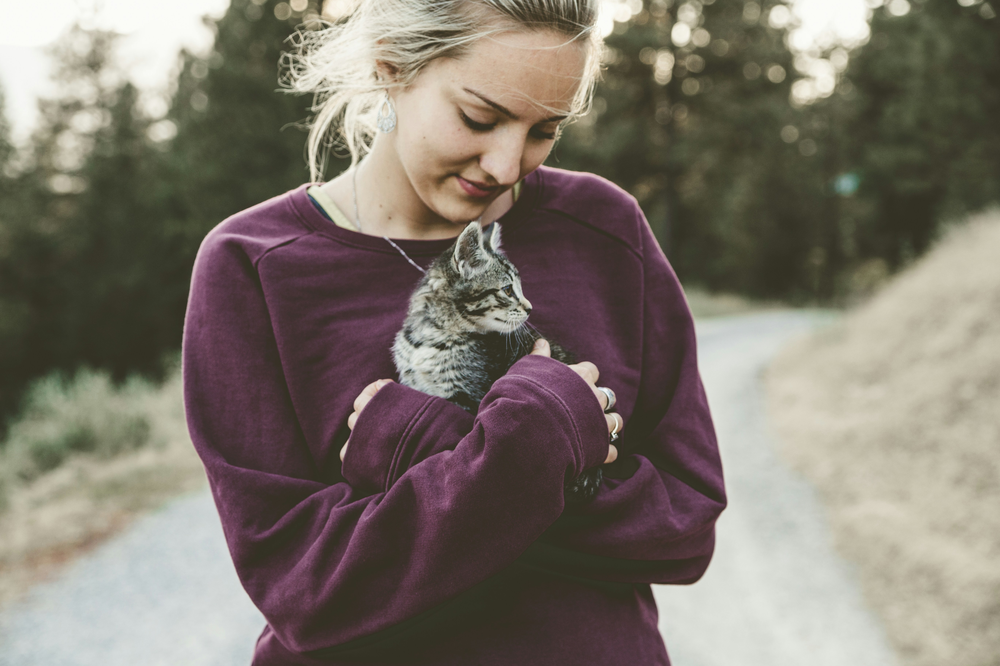

Tamara, the charming Chihuahua, found her forever home four months ago when she was lovingly adopted by the Johnson family.
From the moment Tamara entered their lives, she brought an abundance of joy and warmth. Despite her petite size, Tamara's personality is larger than life, filling the household with laughter and affection.
With each passing day, she has become an integral part of the family, melting hearts with her expressive eyes and playful antics.
The bond between Tamara and the Johnson's has grown stronger, proving that sometimes the smallest packages bring the greatest happiness.
Frankie

Three weeks ago, a tiny ball of fur named Frankie found his forever home. Adopted with help from this website, Frankie, the charming and playful kitten, quickly charmed his way into the hearts of his new family, the Swilley's.
With his mesmerizing green eyes and soft, striped coat, Frankie has become the center of attention in the household. From exploring every nook and cranny to pouncing on imaginary prey, he has brought joy and laughter into the home.
Frankie's playful antics and gentle purrs have created a special bond, making him not just a pet but an adored member of the family.
The decision to adopt Frankie has proven to be a delightful and heartwarming choice, as each day brings new adventures and moments of pure feline joy.
Shea
Nine months ago, a graceful and sleek cat named Shea found her forever home through adoption.
Shea brought a sense of calm and elegance to her new family's life. With her luxurious, silver-gray fur and bright amber eyes, Shea exudes a regal charm that has captivated everyone around her.
Over the past nine months, she has seamlessly integrated into the Smith household, claiming sunny spots by the window as her favorite lounging spots and demonstrating her playful side with feather toys and catnip-infused adventures.
Shea's presence has become a comforting and cherished part of the family, proving that the decision to adopt her was not only compassionate but also an enriching addition to their lives.